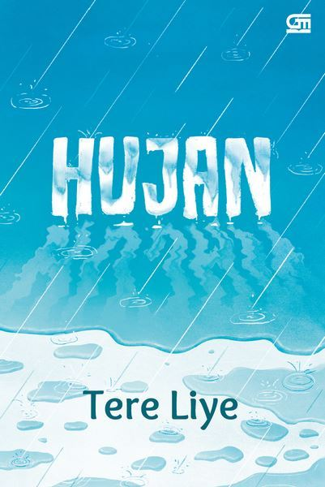

Tentang Kamu

Beli Buku Disini
Novel satu ini menceritakan mengenai Zaman, seorang pengacara muda asal Indonesia yang bekerja di Thompson & Co, salah satu firma hukum di London. Zaman kemudian ditugaskan untuk mengurus warisan atas nama Sri Ningsih yang berjumlah sangat banyak dan ia harus mencari pewaris yang sah. Hanya dengan berbekal buku diary Sri Ningsih, Zaman mengekplorasi perjalanan hidup Sri Ningsih sejak dia masih muda hingga meninggal. Berbagai perjalanan harus ditelusuri oleh Zaman untuk mencari lokasi Sri Ningsih dari buku harian yang ditemukannya.
Novel ini menggambarkan sebuah perjalanan seseorang di masa lalu yang penuh perjuangan. Sikap positif dan optimis dalam menghadapi berbagai masalah akan membawa seseorang dalam kejutan-kejutan tak terduga dalam hidup. Untuk Anda yang sering ragu dalam membuat keputusan, buku ini mungkin bisa membantu!
Rembulan Tenggelam di Wajahmu

Beli Buku Disini
Novel ini mengisahkan kehidupan seorang anak bernama Ray yang mempunyai lima pertanyaan dalam hidupnya. Ia adalah seorang anak yatim piatu yang tinggal di sebuah panti asuhan. Akan tetapi, selama dirinya menetap di sana, ia merasakan ketidaknyamanan karena penjaga pantinya yang bertindak semena-mena pada anak-anak panti. Hingga akhirnya, saat itu Ray membuat suatu keputusan, yakni pergi dari panti asuhan itu, tempat di mana sedari kecil ia tumbuh dan berkembang di dalamnya. Meskipun perjalanan hidupnya penuh dengan ups and downs, pada akhirnya Ray juga menemukan makna hidupnya.
Novel ini mengajarkan bahwa warna-warni dalam kehidupan mungkin rumit untuk dijalani. Namun, akan sangat banyak hidden gems yang tidak diketahui. Di dalam novel ini, kalian akan menemukan jawaban atas lima pertanyaan yang selama ini Ray renungi setiap kali menatap rembulan semasa di panti asuhan. Novel ini telah diadaptasi menjadi film layar lebar pada tahun 2019. Untuk Anda yang sedang mengalami quarter-life crisis, novel ini bisa jadi bacaan yang cocok.
Hujan
Beli Buku Disini
Novel ini memiliki setting waktu di masa depan, di tahun 2050. Lail, seorang yatim piatu akibat bencana alam hebat bertemu dengan Esok. Setiap perjalanan hidup mereka selalu dilalui bersama, hingga suatu ketika mereka harus berpisah. Esok harus mengemban pendidikan yang lebih tinggi di tempat yang jauh. Jatuh bangun dalam kehidupan membuat Lail makin menyadari bahwa ia membutuhkan Esok.
Novel ini menceritakan perjalanan kisah pahit Lail membuatnya memutuskan untuk menghilangkan semua memorinya bersama Esok, meskipun Lail tidak tahu apakah keputusannya untuk menghapus memorinya adalah keputusan yang tepat. Untuk Anda yang sedang atau pernah mengalami peristiwa kehilangan yang membekas, novel ini bisa jadi teman baik Anda.
Serial Pulang-Pergi

Beli Buku Disini
Novel ini merupakan novel berseri yang mengisahkan Bujang, si babi hutan. Novel bergenre action ini diawali dari series pertamanya yaitu Pulang (2015), Pergi (2018), dan Pulang-Pergi (2021). Pulang secara garis besar menceritakan mengenai sosok Bujang yang tinggal di Bukit Barisan bersama kedua orang tuanya. Bujang kemudian dihadapkan oleh rahasia besar keluarganya yang ternyata menyangkut dengan organisasi hitam Keluarga Tong. Novel Pulang bermakna bahwa siapapun pada akhirnya pasti akan pulang ke hakikat kehidupan. Maka dari itu, Bujang pun akhirnya pulang menjenguk makam mamak dan bapaknya, juga berdamai dengan masa lalunya yang menyakitkan.
Sedangkan Pergi mengisahkan tentang petualangan Bujang dalam menemukan makna dari tujuan hidupnya, dan menemukan arti dari kata Pergi yang sesungguhnya. Bujang yang sering dijuluki sebagai Sang Babi Hutan memiliki nama asli Agam. Ia dikenal sebagai anggota keluarga Tong, salah satu penguasa Shadow Company, sekaligus seorang tukang pukul handal. Dan pada series terakhirnya yaitu Pulang-Pergi bercerita pertemuan antara dua tokoh atau karakter utama dari dua novel yang berbeda pula. Karakter utama Bujang dari novel Pulang (2015) dan Pergi (2018), sedangkan karakter Thomas dari novel Negeri Para Bedebah (2012) dan novel Negeri di Ujung Tanduk (2013).
Novel ini memiliki latar belakang cerita di dunia bayangan, kehidupan ilegal yang di manipulasi sedemikian rupa hingga terlihat seperti legal. Buku ini akan membuat kamu gak bisa berhenti baca karena sangat menuntut konsentrasi mu. Membuat siapa saja yang membacanya ikut hanyut dalam ketegangan-ketegangan yang tercipta.
Serial Bumi

Beli Buku Disini
Novel ini merupakan novel berseri yang bertemakan petualangan fantasi di dunia paralel. Bagi pecinta novel bergenre fantasi, kalian wajib untuk miliki dan baca 11 buku dari serial Bumi karya Tere Liye ini. Untuk urutan ke-13 buku serial Bumi, di antaranya Bumi (2014), Bulan (2015), Matahari (2016), Bintang (2017), Ceroz dan Batozar (2018), Komet (2018), Komet Minor (2019), Selena (2020), Nebula (2020), Si Putih (2021), Lumpu (2021), Bibi Gill (2022), dan Sagaras (2022). Pada serial novel Bumi ini, buku pertamanya adalah Bumi sebagai pembuka perjalanan Raib, Ali, dan Seli di dunia lain yang disebut dengan dunia paralel.
Novel ini dipenuhi dengan adegan pertarungan yang menegangkan sehingga Anda tidak akan bosan. Dunia fantasi dalam novel Bumi juga dikisahkan dengan sangat apik oleh Tere Liye. Penggemar novel fantasi wajib baca!